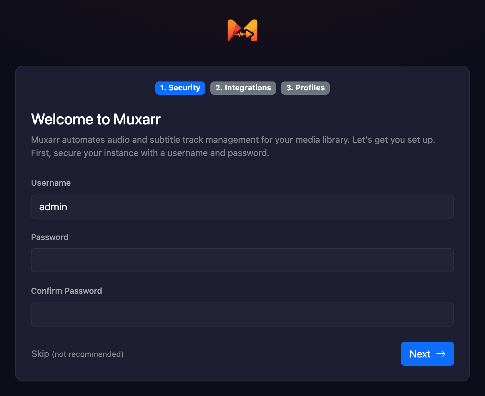
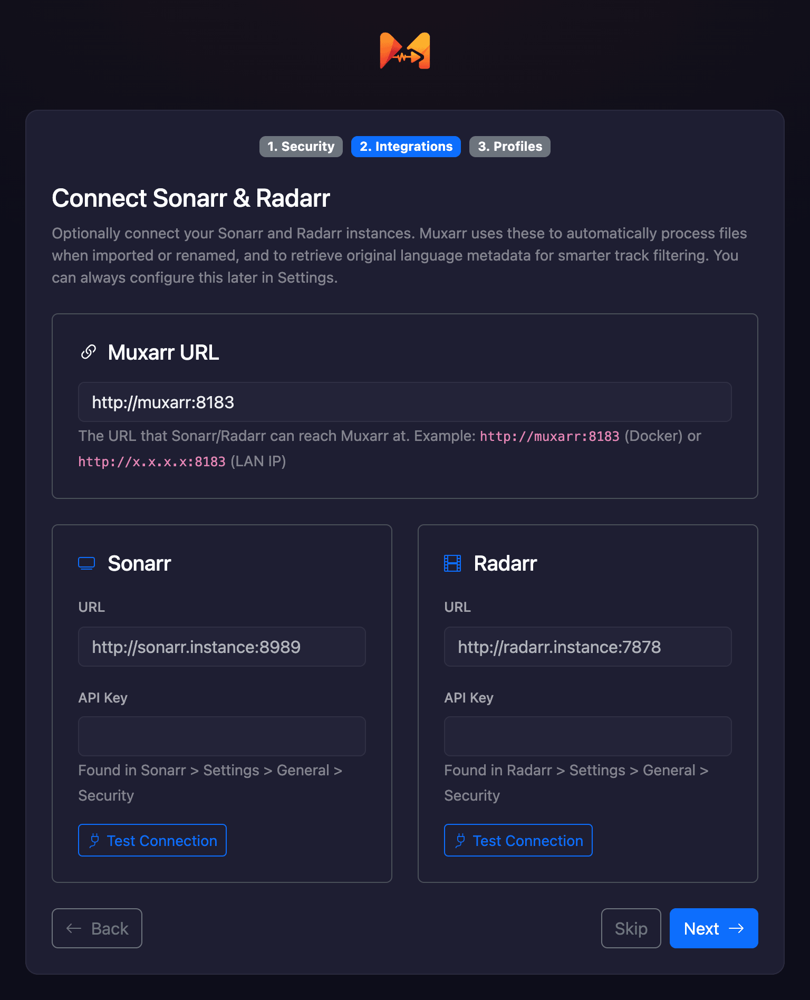
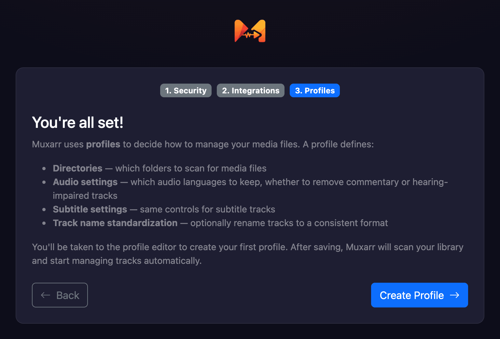
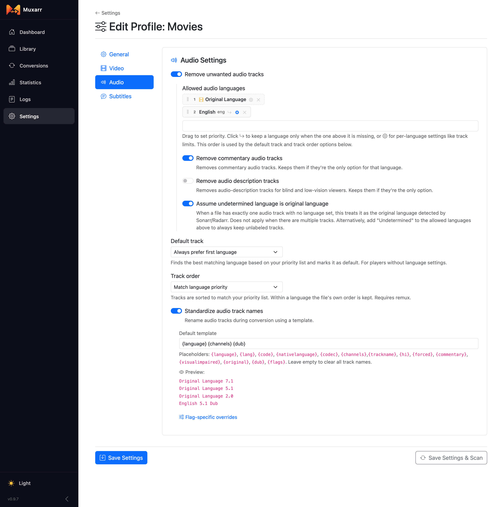
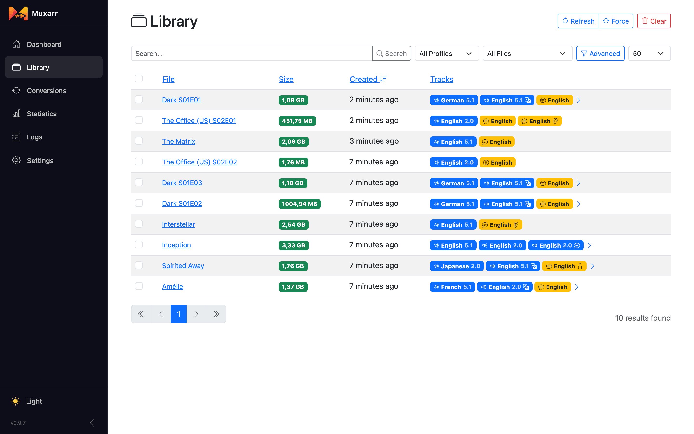
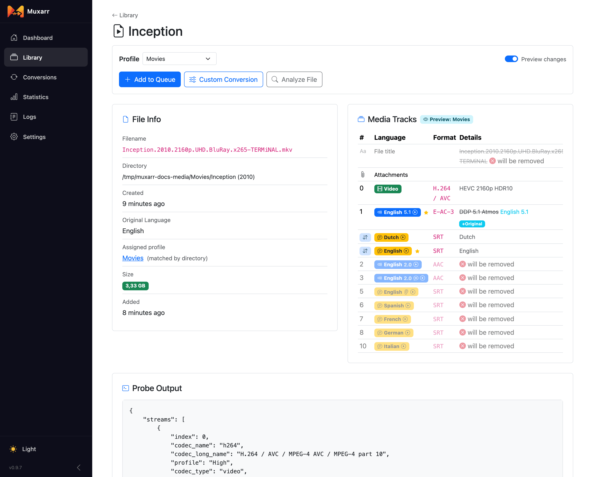

Getting started
Muxarr goes through your movies and shows and takes out the audio and subtitle tracks you will never play. It also tidies up track names and flags. Nothing is re-encoded, so it is fast and there is no quality loss. This page gets you from install to your first cleaned-up file.
What Muxarr does
A typical release comes with more than you need: a French dub, a commentary track, Spanish subtitles, a second English subtitle for deaf and hard-of-hearing viewers (SDH). Every extra track costs disk space and clutters your player's menus. You tell Muxarr which languages you actually watch and read, and it keeps those and drops the rest.
Along the way it can also:
- Give tracks clean, consistent names ("English 5.1" instead of "DTS-HD MA 5.1 @ 1509kbps [RelEaSeGroup-RRR]").
- Fix default and forced flags so your player picks the right track without asking.
- Put tracks in the order you prefer.
- Clear leftover release-group text from the file title, and remove chapters if you want.
Muxarr calls this a conversion, but nothing is re-encoded. The video and audio are copied as they are into a new file, minus the tracks you dropped. That keeps the quality identical and makes it fast, usually a minute or two for a big film, even on a NAS or a Raspberry Pi. When an MKV only needs new names or flags, Muxarr edits the file in place and it is done in a second. Under the hood that is mkvmerge and mkvpropedit for MKV, ffmpeg for MP4.
Install and first run
Muxarr runs as a Docker container. The setup section on the home page
has a ready-to-copy compose file. Two things matter: /config is where Muxarr
keeps its own database, and your media has to be mounted inside the container at some path
(/media, /movies, /tv, whatever you like).
Open http://your-ip:8183 and a three-step wizard walks you through the basics.
Every step can be skipped and changed later under Settings.



Your first profile
A profile is a set of rules plus the folders they apply to. Most people start with one profile for everything and split later (movies versus TV, or anime with its own language rules). A file follows the profile whose directory it lives in.
For a first profile:
- Give it a name and add the folder(s) with your media, using the folder picker. These are
the paths as Muxarr sees them inside the container (
/media/movies, not the path on your host). - On the Audio tab, switch on Remove unwanted audio tracks. Muxarr adds Original Language for you: with Sonarr or Radarr connected, that row keeps a foreign film's real soundtrack whatever language it is. Add the language you watch dubs in, if any. Switching on Remove commentary audio tracks is a safe bet.
- On the Subtitles tab, do the same with the languages you read. Remove SDH subtitle tracks drops the hard-of-hearing version when a regular one exists.
- Click Save Settings & Scan.

One more thing before you convert anything in bulk: open a handful of files, including a foreign-language one, and look at the preview. A scan is harmless; a conversion rewrites the file. If a film's Original Language shows "-" on its details page, Muxarr did not get it from Sonarr or Radarr and cannot protect that soundtrack yet.
Scan, preview, convert
The day-to-day rhythm is always the same:
- Scan. Muxarr reads every file's tracks. Nothing is changed by a scan.
- Look. The Library lists every file with its tracks. Open one and the Preview changes switch shows exactly what the profile would do: which tracks go, which get renamed, which flags change.
- Queue. Happy with it? Queue the file, or select many at once and queue them together.
- Convert. The Conversions page shows progress, and afterwards the size saved and the tracks before and after. Nothing is re-encoded here, "convert" just means the file is rewritten with the tracks you chose.


With Sonarr and Radarr connected you rarely queue by hand: they tell Muxarr when a file has been imported, Muxarr waits a minute so tools like Bazarr can finish, then scans and queues it. See how the webhook flow works.
To have Plex, Emby or Jellyfin pick up the changed file, add it under Settings › Notifications with the Completed trigger; see media server refreshes.
How a conversion stays safe
When a file has to be rewritten, Muxarr goes about it carefully, in this order:
- The new file is written next to the original as a temporary file. The original is not touched. This means you need free space for one extra copy of the largest file you are converting.
- The temporary file is probed again and checked against the plan: the right tracks, the right flags, a sane duration. If anything is off, the conversion fails and the original stays exactly as it was.
- Only then are the files swapped: the original is renamed to
.muxbak, the new file takes its place, and the backup is deleted. If the swap itself fails halfway, the backup is put back.
If Muxarr is stopped at a bad moment, it cleans up on the next start: leftover temporary files
are removed and any .muxbak whose original is missing is restored.
When an MKV only needs new names, flags, a cleared title or its chapters removed, there is no rewrite and no swap: the metadata is edited in place. Muxarr rescans the file afterwards to confirm everything stuck, and falls back to a full rewrite if it did not.
Where to go next
- Profiles: every setting, what it does, and a few ready-made recipes.
- Library and conversions: filters, bulk actions, batch editing, custom conversions.
- Sonarr, Radarr and notifications: automation, media server refreshes, post-processing.
- FAQ and troubleshooting: the questions that come up most.